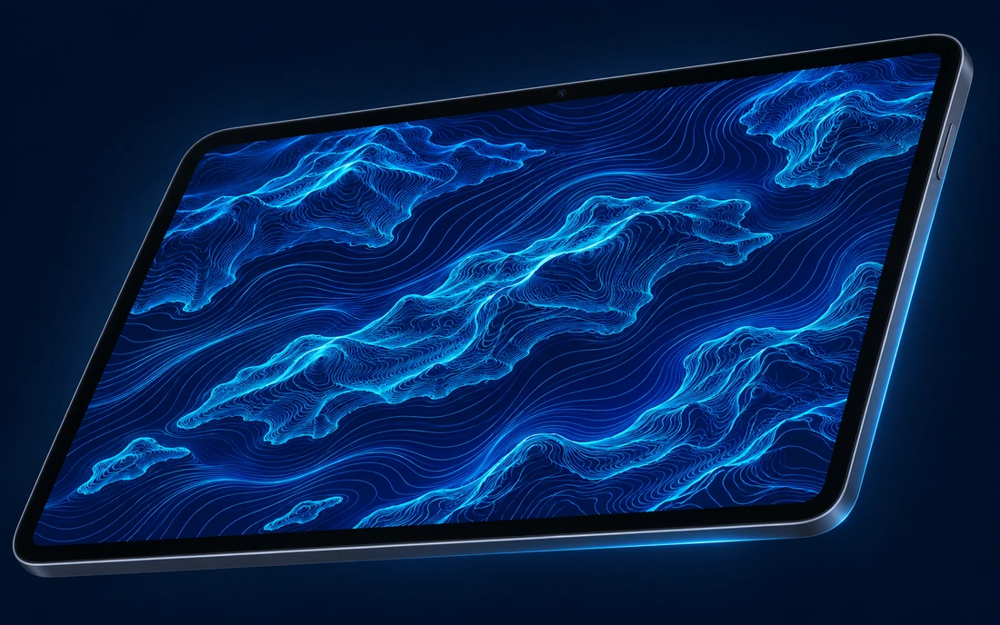

Set up your Amazon Fire tablet, install Google Play, and take control of your preinstalled apps.
Check your Fire OS version in Settings → Device Options → System Updates. It determines which apps and ad controls you can use.